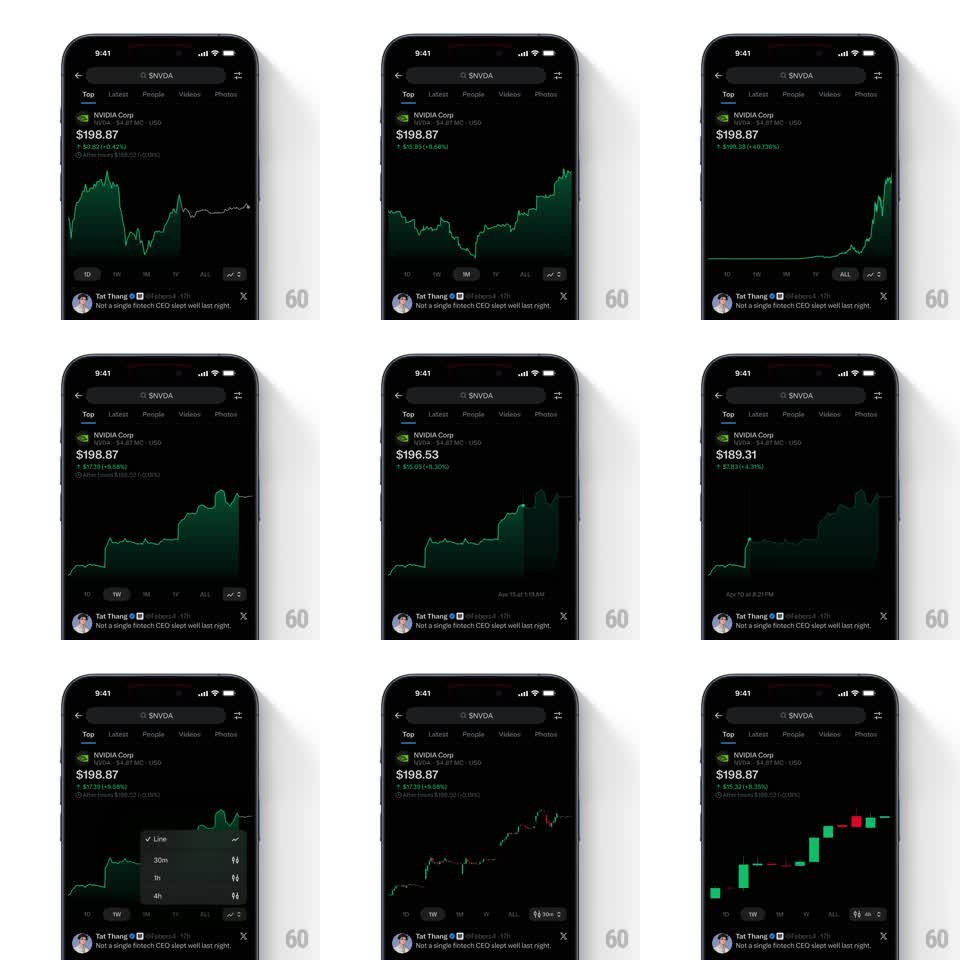

Media
Frame-by-frame

Rebuild this interaction 1:1: X's cashtag stock chart - scrub the graph and the price header tracks your finger, range chips morph the series, and a popover swaps between line and candlestick rendering.

Rebuild this interaction 1:1: X's cashtag stock chart - scrub the graph and the price header tracks your finger, range chips morph the series, and a popover swaps between line and candlestick rendering.
## Integration
Integration: stack-agnostic spec - springs given as stiffness/damping, timed motions as duration + curve; map every value to your framework and animation library of choice.
## Scene
An X post-detail style page for $NVDA, dark: search bar with back and sliders icon, Top/Latest/People/Videos/Photos tabs, then the stock card - "NVIDIA Corp" with logo, big price ($198.87) with a green change line and after-hours note, the chart, range chips 1D 1W 1M 1Y ALL plus a chart-type button, and the originating tweet pinned below.
## Motion spec
Pattern: scrubbable financial chart with live header and morphing ranges.
- Touch-drag across the chart: a vertical crosshair and dot snap to the series (haptic tick per data point), the header price and change crossfade to the scrubbed value (100ms per update), and a timestamp label ("Apr 15 at 1:15 AM") fades in at the chart's base; release fades the crosshair (200ms) and the header eases back to the latest price (250ms).
- Range chips: the active chip gets a filled pill (150ms) and the series redraws by scaling from the right edge - the old line compresses horizontally into the new one (300ms, ease-in-out), the area fill following.
- Chart-type button opens a small popover (scale from its anchor, spring ~400/20) listing Line, 30m, 1h, 4h; picking candles morphs each line segment into its candle (staggered 20ms left to right, 150ms each).
- Positive territory tints the line and area green; the fill is a vertical gradient fading to transparent.
## Calibration
- Scrubbing must feel glued - the dot never lags the finger by more than a frame.
- Red down-values flip the header tint and the change arrow, not just the text.
## Reduced motion
Range changes crossfade (200ms); scrub updates values without crosshair animation.
## Don't miss
- The after-hours line appears only on the latest price, never while scrubbing history.
- The tweet below stays visible - the chart block doesn't push it off screen when popovers open.